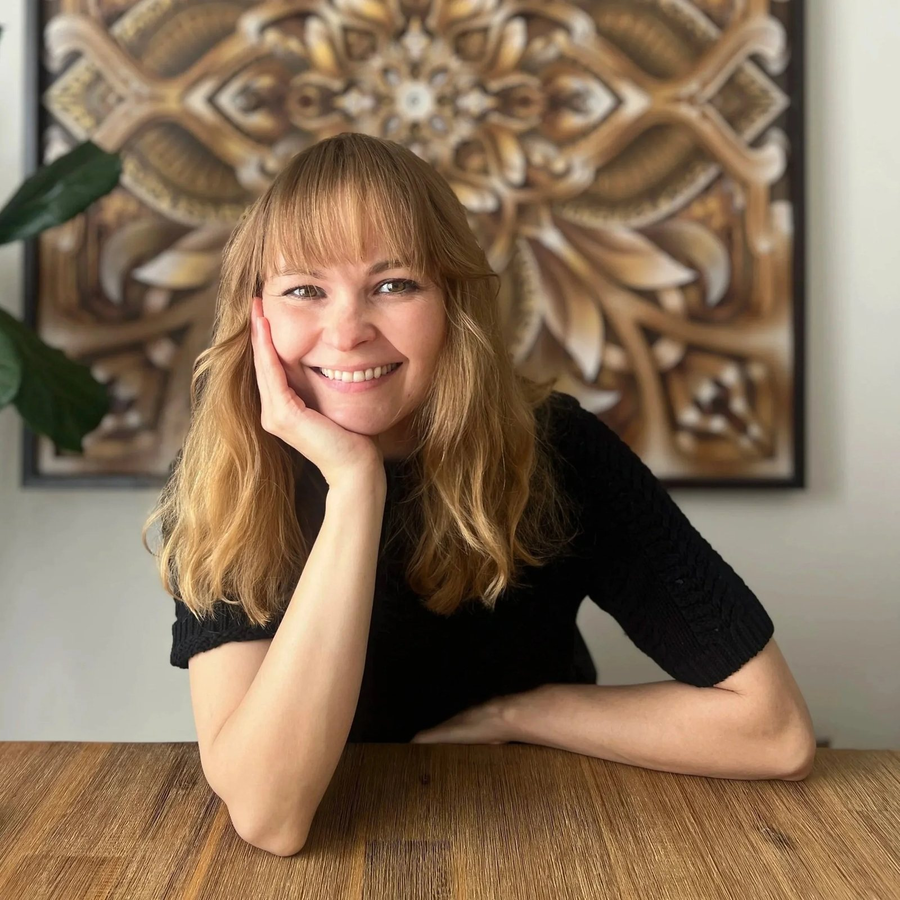

Inspired by nature
I'm Victoria, a Russian-Ukrainian designer and artist who moved to San Francisco eleven years ago. For over a decade, I built a career in tech, but when I discovered clay, something clicked into place.
I've always been drawn to the quiet beauty around me: the intricate designs and patterns in architecture, the timeless elegance of marble, the way light catches on leaves, the patterns in tree bark, the colors that shift across the ocean. My marbling technique is my way of translating those fleeting moments into something tangible, something that lasts.
After years of creating for screens, I'm now creating with my hands. Stone Bloom is my leap into the life I've been working toward, one where I can show others what I see: that beauty exists in unexpected places, and that even stones can bloom.